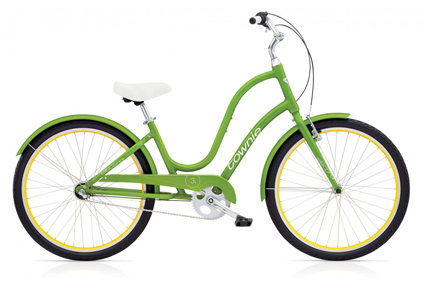

Going to Market
The revolution started here with the Electra’s patented Flat Foot Technology to the world and it was love at first sight. That love has made the Electra the best-selling bike in the North America. Turns out people like originality.
The Electra was born from an idea that challenged the sacred geometry of bike design and created a completely different riding experience. With an upright seating position that lets you see the world better and plant your feet flat on the ground whenever you want, it sets a new standard in comfort and control. Although most Electra bikes feature Flat Foot Technology to some degree, the Electra showcases it in all its glory.

Townie Market Specs
What You Get
- Front Derailleur Shimano SLX M660-E 10 speed E-Type
- Rear Derailleur Shimano Deore RD-591 SGS 9
- Cassette Shimano Deore HG-61 12-36T 9
- Crankset Samos alloy forged w/32/22T /guard external BB
- Grips Super light foam grip / all black
- Front Brake Tektro hydraulic disc brake w/180 rotor (E bike model)
- Rear Brake Tektro hydraulic disc brake w/180 rotor (E bike model)
- Brake Levers Tektro